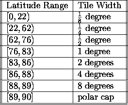
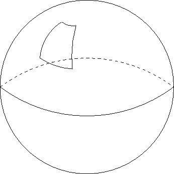
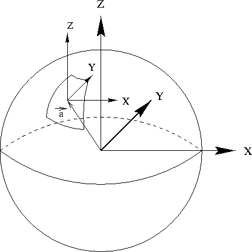
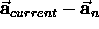

AboutHomeIntroduction Overview Features Screenshots DownloadsDownload ApplicationDownload Scenery Download Source Code FlightGear CD's FTP Mirrors SupportVersion SummaryHardware Requirements Documentation Places to Fly Lists, Forums, and IRC FAQ LinksRelated WebsitesRelated Projects ContributeContributingCVS Resources Goals Contributors Design Proposals Events |
Flight Gear Scenery Generation Tools.
Curtis L. Olson
1 IntroductionThis document gives a brief overview of the Flight Gear scenery generation tools and how they fit together in a pipeline to produce the runtime scenery from the raw data. The first sections describe how the Flight Gear Earth is subdivided and the coordinate systems that Flight Gear uses internally. The remaining sections describe the tools that take diverse data sources and produce the actual scenery.
2 Internal Scenery RepresentationThis section describes how FG represents, manipulates, and transforms scenery internally. Internal, all FG scenery is defined using a cartesian coordinate system centered at the center of the earth. Please refer to the Flight Gear CoordinateSystem document for more information. This means that one of the scenery tools processing steps will be to convert from the source data coordinate system to the internal Flight Gear coordinate system.
2.1 Scenery PartitioningFlight Gear splits the world up into tiles. This splits up the immense scenery data base into chunks that are managable by the run time simulator. Tile edges are parallel to longitude and latitude lines. Tiles are gauranteed to be at least 8 miles long in both width and height. As we move towards the poles, the tiles get narrower, so at certain predefined latitudes, the tile with is doubled. Figure 1 shows latitudes vs. tile widths. The southern hemisphere is a mirror image of the northern hemisphere.

Since Flight Gear tiles are partitioned parallel to longitude and latitude lines, they have a trapezium shape. Figure 2 shows an exaggerated scenery area.
 2.2 Reference PointsEach scenery area will have a reference point at the center of its area. This reference point (for purposes of avoiding floating point precision problems) defines the origin of a local coordinate system which. The local coordinate system is simply translated from the global coordinate system by the distance of the tile's center reference point from the center of the earth. Figure 3 demonstrates this better than I can explain it.

All the objects for a specific scenery area will be defined based on this local coordinate system. For each scenery area we define a vector which represents the distance from the center of the earth to the local coordinate system.
2.3 Putting the pieces of scenery togetherTo render a scene, the scenery manager will need to load all the visible tiles. Before rendering each tile we translate it by  . This moves all the rendered tiles near to the origin, while maintaining the relative positions and orientations. The of moving all the tiles near the origin before rendering them is to try to reduce floating point round off problems. When rendering, it is straightforward to calculate the proper view point and up vector so that the scenery will appear right side up when it is rendered.
2.4 Scenery file formatHere is a very brief overview of the flight gear scenery file format. Some of this format will have to change in the future, so I won't put a lot of effort here right now. This description will be most understandable if you reference an actual scenery tile file. If you have questions, please ask!
I will eventually need to add texture coordinate support to this file format, as well as a way to reference and position objects from an external library.
3 Scenery GenerationThis section is very fluid right now. I have implemented a first pass at generating scenery. This was a good learning experience, but it exposed several flaws and limitations in my original approach. I am in the midst of a complete overhaul of these tools which is intended to address all the short comings of my first attempt. At this point I am simply outlining the plan. Much of this could change as my plan continues to smack up against reality. With that in mind, the scenery generation tools can be subdivided into four major categories.
3.1 Libraries
3.1.1 GPCGPC is the ``Generic Polygon Clipper'' library. It is available from http://www.cs.man.ac.uk/aig/staff/alan/software Please be aware that the licensing terms for the gpc library clash with the GPL and prevent the source code from being redistributed with any GPL program. Therefore any developers interested in building the scenery tools will have to fetch and install this library individually on their own systems.
3.1.2 GFCGFC is the ``Geographic Foundation Classes'' library. It is available from: http://www.geog.psu.edu/ qian/gfc/index.html This library allows programs to process GIS shapefiles and extract out the lon/lat coordinates of the GIS structures.
3.1.3 DEMThis is a library of routines distributed as part of Flight Gear. This library has routines to parse the 3 arcsec DEM file format, approximate the regular grid of height data, with an irregular grid, and interpolate the elevation of any arbitrary point inside the grid. An irregular grid can often represent the same level detail as a regular grid with 4-6x fewer polygons. This is very desirable in a flight sim where both detail and rendering speed is very important. Another feature of an irregular grid is that it carries fewer artifacts that could provide negative training value to pilots. For instance a regular grid could give a pilot non-realistic cues for determining north/south/east/west.
3.1.4 TriangleTriangle can be built as a standalone binary, or as a library. For our uses I am choosing to build it as a library. This library impliments the delauney triangulation algorithm. It takes a set of unorder points and finds the optimal triangulation of these points. For our use we feed in a set of unordered height values and the triangle library will output a set of triangles that can be rendered as terrain. The triangle library does a few more things that are useful. It will subdivide triangles to ensure that they never get too long and skinny. It will also let you set up boundaries and holes within the triangulation area.
3.2 Preprocessing tools
3.2.1 GenAirportsThis tools inputs an ascii specification of the airports of the world that looks like the following:
KORD Chicago O Hare International
-087.917774 41.976778 13000 200 140 155154 14 R 668
-087.902380 41.969040 10141 150 90 154154 09 R 668
-087.903546 41.991918 10003 150 140 155154 14 L 668
-087.889594 41.961618 8071 150 41 154154 04 R 668
-087.903705 41.983954 7967 150 90 154154 09 L 668
-087.905138 41.989606 7500 150 39 142144 04 L 668
-087.900410 41.990086 5341 150 180 131131 18 x 668
For each airport, a bounding polygon is generated, and written as a clipping record for each intersecting tile in the scenery construction area. The actual airport will belong to the tile containing it's center point, but the airport will need to be clipped out of the base terrain from any tiles it might spill over into.
3.2.2 ShapeFileThe ShapeFile tool will take the polygons from shapefiles (via GFC), clip them to the appropriate tile boundares (via GPC) and write the resulting polygons to the appropriate tile in the scenery work space.
3.2.3 DemRaw2asciiThis tool will input the 30 arcsec raw DEM format, split it up into 1 x 1 degree sections, and output the result into the 3 arcsec format so it can be fed through the scenery pipeline.
3.2.4 Dem2nodeThis tool takes the raw DEM files and calls routines from libDEM.a to create the irregular grid approximation of the original data. The elevation data is writen to the to the appropriate tile in the scenery work space.
3.3 Scenery generation toolsIssues: Combining height data, polygon data. Triangulating / tri-stripping / tri-fanning. Matching vertices and normals along edges and at corners. Resolving conflicts in data: overlapping polygon areas. conflicting height data between airports and DEM data Here's the basic process to create scenery: Dump the raw data into the appropriate tile areas in the work space. This includes height data (DEM, airport) and polygon data (airport, hydro-data, land use data, etc.) For each tile, run the generic clipper on each polygon in order from highest to lowest incrementally building an accumulation ``super'' polygon that comprises a union of all polygons we've processed so far for this tile. For each polygon first clip against this super-accumlation-polygon. What's left after the clip is the new shape of the polygon. This is the scheme for eliminating overlapping features on a priority basis. For each polygon on a tile we must determine a point inside. We need this for the triangulation step. For each polygon, triangulate all the height fields in the tile. Using the triangle library we can feed in all the polygon outlines with the corresponding interior points. We can tell the triangulator to start at every point except for the one we are working on and eat away all the triangles until a polygon border is encountered. This leaves us with the triangulation of each polygon. Now we have a pile of height data and the triangulation for each polygon. However, some of these hieght fields must be enforced (airports) and some of this can be adjusted (base terrain). We might also want to think about ensuring lakes are level, and rivers don't run up and down hills. Anyways, with a flurry of handwaving, we have adjusted all the heights. The next thing we have to worry about is making sure each tile meshes exactly with all it's neighbors. We do this by spliting the tile up into it's 4 edges, 4 corners, and the remaining vertices. We write these parts out as individual files if a neighboring tile hasn't been processed first. In other words, the first tile to be process gets to define the shared edge or corner. The neighbor must use this data if it exists. Then we have to reassemble the tile using any pre-existing edges from a neighbor tiles that were processed before us and retriangulate since our node list has changed. <whew> Unfortunately it's not quite this simple! We need to be careful, because we have to make sure we also preserve the polygon connections since lakes, rivers, and even airports often span multiple tiles. To do this I propose a scheme of assigning a unique integer id to each polygon. When writing out the shared edge/corner pieces I also associate this idea. So rather than disassembling, sharing, and reassembling whole tiles, we need to do this on a per-polygon basis. More handwaving and we are off to the next step. Now, we need to take our 3d, triangulated polygons and tri-fan or tri-strip them for rendering efficiency. We have been using a freeware tool called ``stripe'' but it's a typical CSci hack job where the author was more interested in demonstrating the theory, rather than demonstrating bug free, robust, well written code. Oh well. I think I will try to write a utility to combine triangles into fans. This will help culling (smaller, centralized objects == better culling) but will happen at the expense of more vertex transformations. I'm hoping this will result in a net gain. Finger crossed. :-) Finally, we need to take our 3d, fan-ified polygons and convert them to the FGFS scenery format and copy them from the work space directory tree into the final scenery directory tree.
3.4 Miscellaneous Utilities
3.4.1 DemInfoReads the ``A'' record from a 3 arcsec DEM file and dumps some pertinent information.
3.4.2 tile-sizes.plGenerates the width of a 1/8 x 1/8 degree tile at various latitudes.
About this document ...Flight Gear Scenery Generation Tools. This document was generated using the LaTeX2HTML translator Version 96.1 (Feb 5, 1996) Copyright © 1993, 1994, 1995, 1996, Nikos Drakos, Computer Based Learning Unit, University of Leeds. The command line arguments were: The translation was initiated by Curtis L. Olson on Sun Feb 14 18:40:55 CST 1999 Curtis L. Olson Sun Feb 14 18:40:55 CST 1999 |